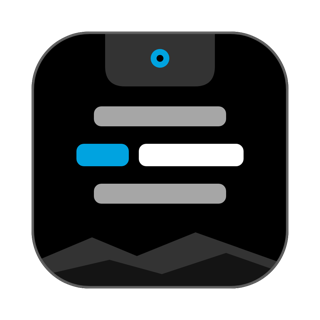
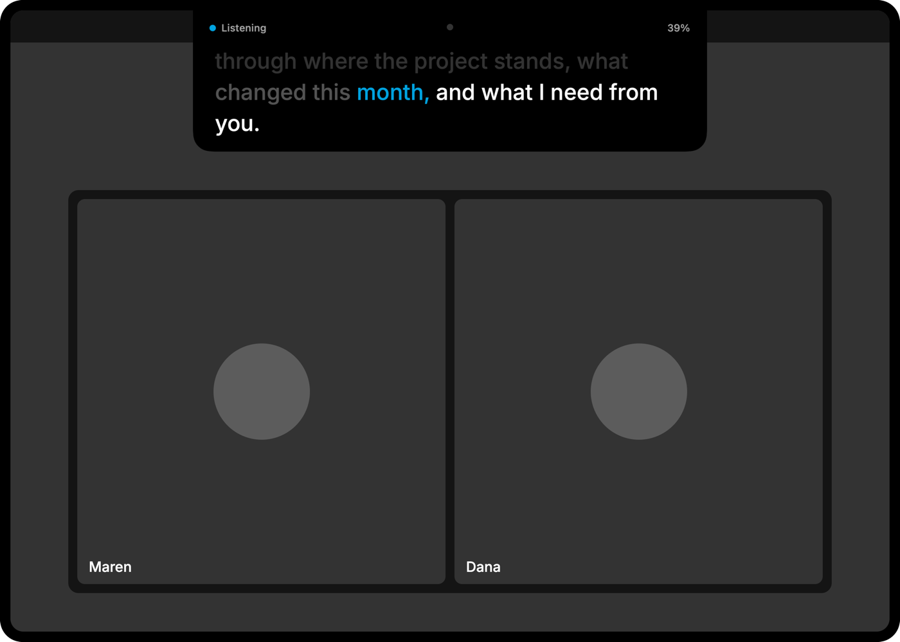
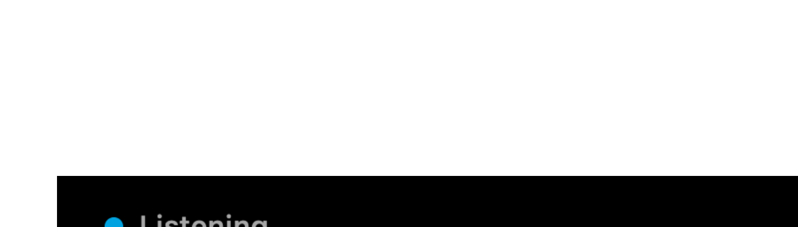
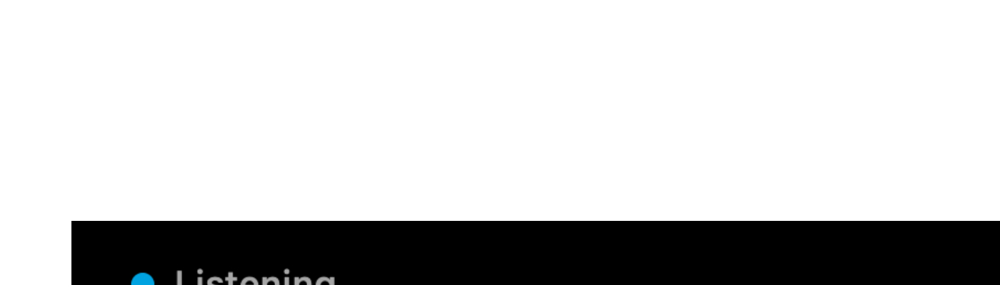
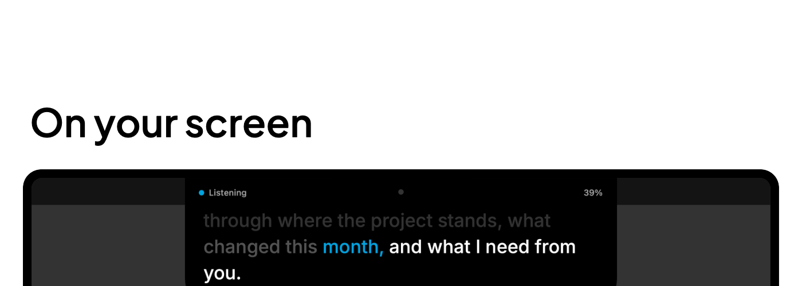

A teleprompter that follows your voice
Snowpine Cue puts your script in a small strip right under your MacBook's camera, so you can read it and still look at people.
Free and open source. macOS 14 or later. See how to install first.

One minute with Snowpine Cue
Read your script without looking away
It keeps pace with you
It listens on your Mac and matches what you say to the script, a few words at a time. The next word lights up in blue.

It keeps your place
Pause, go off script or skip a sentence, and it finds your place again. If it ever guesses wrong, one shortcut nudges it back.

It's built to stay out of your screen share
The strip asks macOS to leave it out of screen capture, so people see your slides and not your script. Call apps and macOS versions can differ, so do one test share before a big call.

Bring the script you already have
Open plain text, Markdown, Word, RTF or OpenDocument files, or just paste your script in. Slide decks saved as HTML with speaker notes load a slide at a time.
Your words stay on your Mac
Speech is recognized on your Mac. Audio is never recorded. The app runs in the macOS sandbox with no network permission, so macOS itself blocks it from the internet. There's no account, no analytics and no tracking. You can check all of this in the code.
Get it running
I don't pay for an Apple developer certificate on this free app, so macOS will warn you the first time. Here's how to get past that.
- Download the latest zip, open it, and drag Snowpine Cue to your Applications folder.
- Open it. macOS will say it can't check the app. Click Done.
- Go to System Settings > Privacy & Security, scroll down, and click Open Anyway.
- The strip appears under your camera with a short welcome guide. Press Control Option P and read it out loud. macOS asks to use the microphone and speech recognition the first time. Allow both.
To remove it, quit from its menu and drag it to the Trash. It has no installer and nothing else to clean up beyond its saved settings.
Or build it yourself
Building it yourself takes about a minute and skips the warning. You need the Xcode Command Line Tools.
git clone https://github.com/snowpinecode/snowpine-cue.git
cd snowpine-cue
scripts/build-app.sh --installGood to know
Is it really free?
Yes. It's open source under the MIT License, so you can use it, change it and share it.
Which Macs does it work on?
Any Mac on macOS 14 or later. It's best on a MacBook with a notch and the built-in camera. On other Macs the strip hangs from the top of the screen.
Is there an iPhone version?
Not yet. It's Mac only for now.
The strip doesn't move when I talk. What now?
Check that Follow My Voice is ticked in the menu, and that Snowpine Cue is allowed under Microphone and Speech Recognition in System Settings. If it says on-device speech isn't available, turn on Dictation under Keyboard settings so macOS downloads the speech model.
Who made this?
Snowpine Code. I build custom websites, apps and automations. See what else I do.